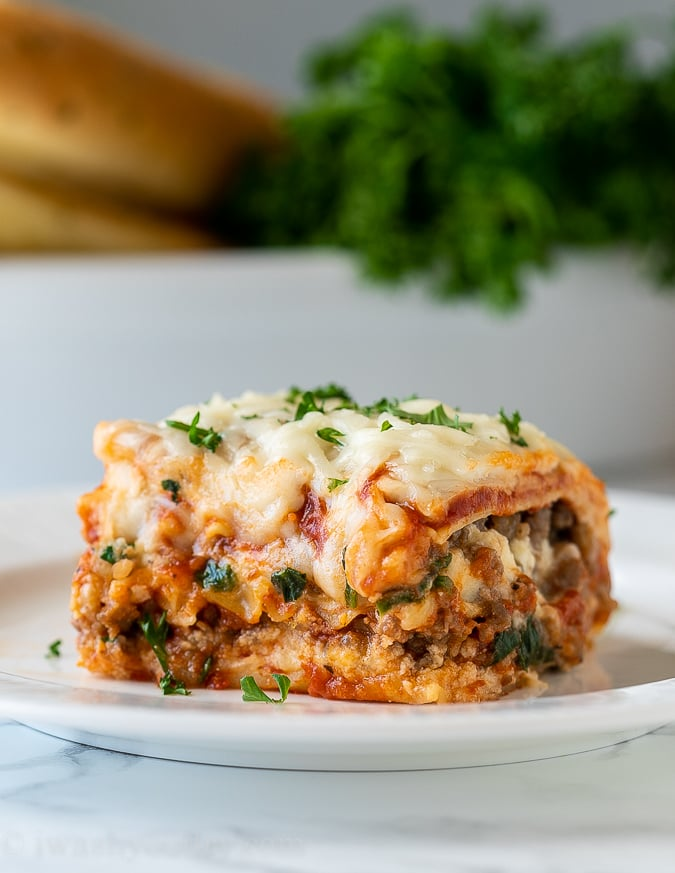

Lasagna

Description
Lasagna is a classic Italian dish that features layers of pasta sheets, savory meat sauce, creamy cheese filling, and melted cheese on top. The dish is hearty and comforting, with each bite offering a blend of textures and flavors.
Ingredients
- Lasagna noodles: 12 sheets
- Ground beef: 500g (1 pound)
- Onion: 1 medium, diced
- Garlic: 3 cloves, minced
- Tomato sauce: 800g (28 ounces)
- Water: 1/2 cup
- Salt: 2 teaspoons
- Sugar: 1 teaspoon
- Dried basil leaves: 1 teaspoon
- Dried oregano: 1 teaspoon
- Black pepper: 1/4 teaspoon
- Ricotta cheese: 425g (15 ounces)
- Egg: 1 large
- Mozzarella cheese: 500g (16 ounces), shredded
- Parmesan cheese: 1/2 cup, grated
- Fresh parsley or basil: 2 tablespoons, chopped (optional)
Instructions
- Prepare the Meat Sauce:
- In a large skillet, cook the ground beef over medium heat until it's browned. Add the diced onion and minced garlic, and sauté until the onion becomes translucent.
- Stir in the tomato sauce, tomato paste, diced tomatoes, and water. Add the salt, sugar, dried basil, dried oregano, and black pepper. Simmer on low heat for 30 minutes, stirring occasionally.
- Cook the Lasagna Noodles:
- Boil the lasagna noodles in salted water according to the package instructions. Drain and rinse with cold water to prevent sticking.
- Mix the Cheese Filling:
- In a medium bowl, combine ricotta cheese with the egg and half of the shredded mozzarella cheese. If desired, add fresh parsley or basil.
- Assemble the Lasagna:
- Preheat your oven to 375°F (190°C).
- Spread 1/3 of the meat sauce on the bottom of a 9x13-inch baking dish.
- Repeat the layers (meat sauce, noodles, ricotta mixture, Parmesan) once more.
- Bake:
- Bake in the preheated oven for 25 minutes. Then, remove the foil and bake for an additional 25 minutes, or until the cheese is golden and bubbly.
- Serve:
- Let the lasagna cool for about 10-15 minutes before serving. This helps it set and makes it easier to cut.
Enjoy your delicious lasagna!